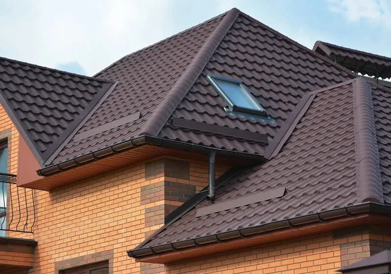
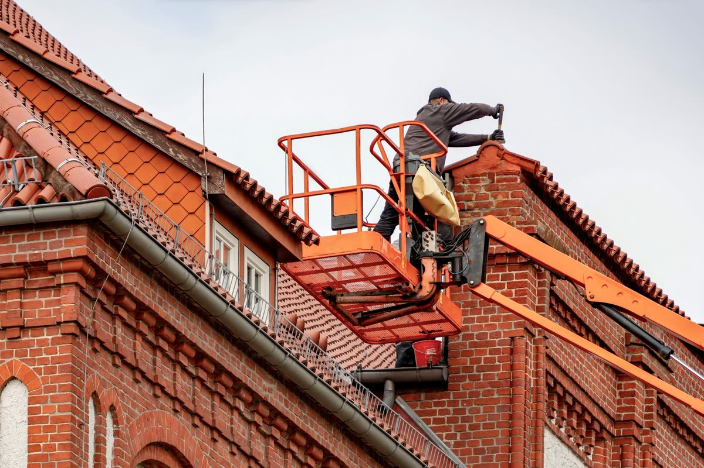
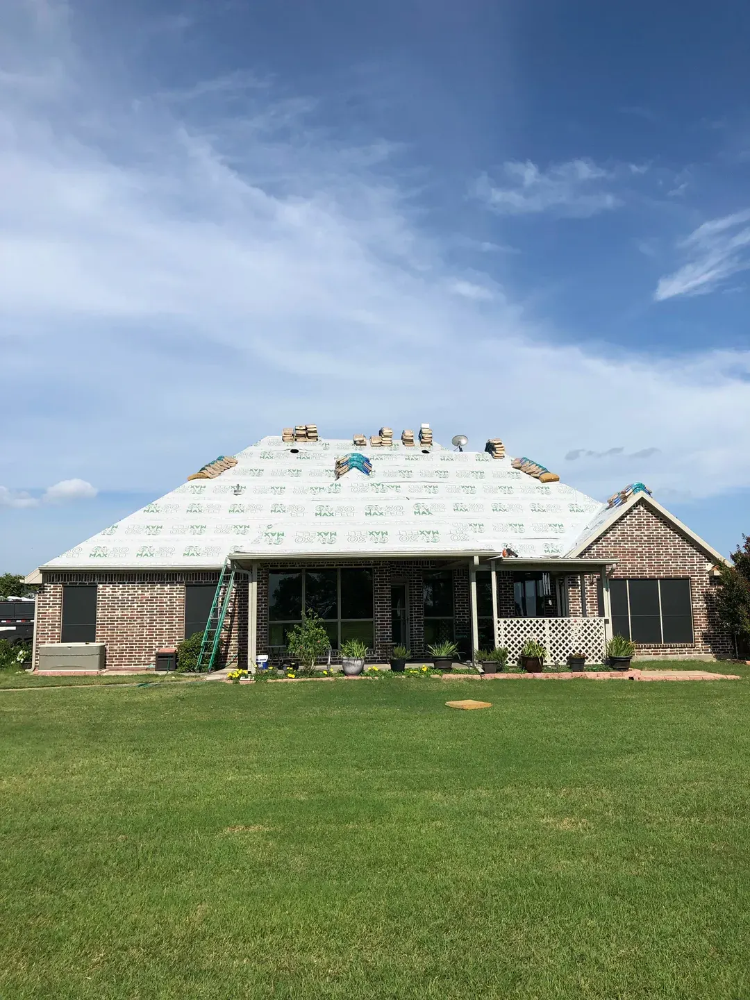
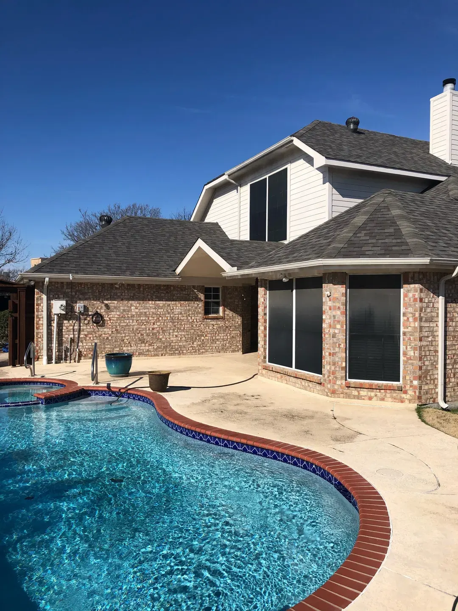
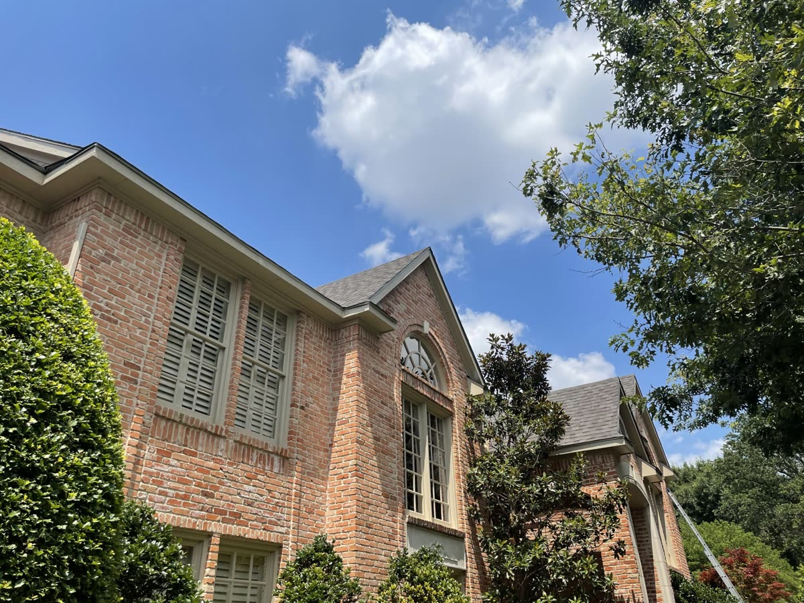
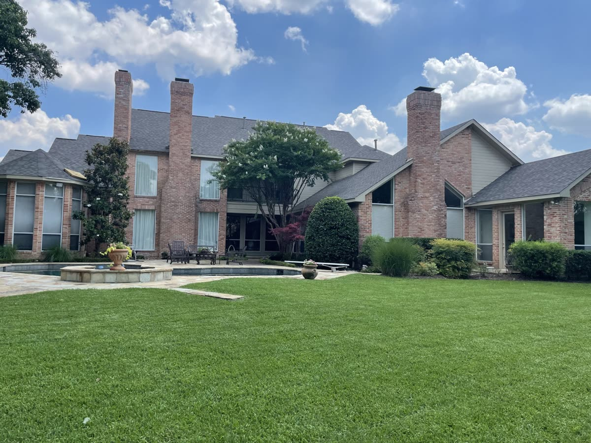

We do the whole roof, from a five-shingle fix to a full tear-off, on homes and businesses around Plano. Everything below starts with the same free inspection.

Cracked and missing shingles, worn flashing, lifted ridge caps, and single leaks traced back to where they actually start. Most of what we see is a repair, not a replacement, and we will tell you so.

When a roof is past its life or damaged across several sections, patching it stops making financial sense. Our own crews handle the tear-off and rebuild, usually in a day or two, and Chris checks the work.

North Texas hail bruises shingles and knocks the grit loose in ways you cannot see from the driveway. We find it before it turns into a leak, and we help you through the insurance side if a claim is the right move.

We walk the roof where it is safe to, photograph what we find, and hand you a written estimate. Free, with no obligation to hire us. About half of our inspections end with us saying the roof is fine.

We roof business properties with the same crews and the same quality checks as our residential work, and we schedule the job around your hours so it doesn't shut you down.
Most people aren't. That's fine. We'll come look for free and tell you, even if the answer is "nothing."